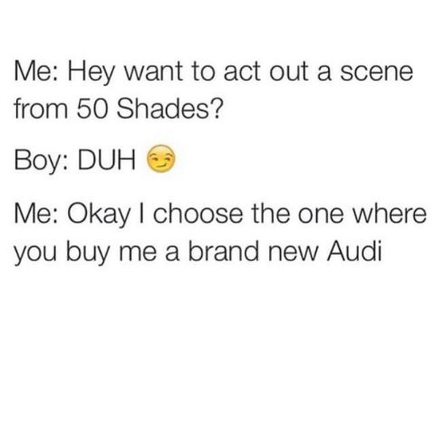
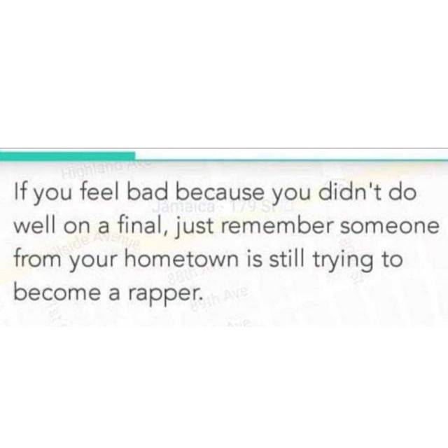
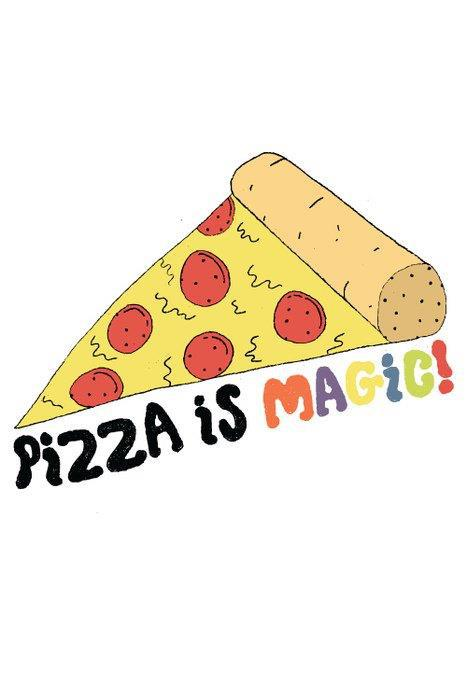

For the Love of Coding:
Form Follows Function Follows Futility...
 My sentiments exactly on coding...
My sentiments exactly on coding...
I thought learning HTML would make me...
 Didn't happen.
Didn't happen.
"Man's got to know his limitations."
 Clint in MAGNUM FORCE after killing corrupt police chief.
Clint in MAGNUM FORCE after killing corrupt police chief.
I know what you are saying. There's no responsive desing in this website. An explanation...
 I'm a dog. I don't listen to the man.
I'm a dog. I don't listen to the man.
Sandy, chill.
 My frickin' animal spirit.
My frickin' animal spirit.
P.J. knows how it's done.
 P.J. defying gravity and chilling.
P.J. defying gravity and chilling.
No. I won't ruin your day.
 Leave that to other people.
Leave that to other people.
No. I'm going to brighten your day.
 Light a spark. That's what. Reveal the power of memes.
Light a spark. That's what. Reveal the power of memes.
This guy wants to be President of the Internet.
 He's Josh Ostrovsky, already King of Instagram.
He's Josh Ostrovsky, already King of Instagram.
Goes by the name, the Fat Jew. Master of the meme.
 Truly dedicated to the cause.
Truly dedicated to the cause.
His thinking is revolutionary.
 He gets the net.
He gets the net.
Has an intimate feel for technology.
 Meaning not my parents' house where the password is RHXFGHJIJ000005...
Meaning not my parents' house where the password is RHXFGHJIJ000005...
Also knows his pop culture.
 He's a romantic at heart.
He's a romantic at heart.
And he really loves that Fifty Shades of Gray flic.

His motto: I love everybody. Who's next?
Got his big break doing dog jokes.
 "Continuing his "dogs wrapped in blankets looking like women
who are cold" series. Because women are always cold and love
blankets. Always.
"Continuing his "dogs wrapped in blankets looking like women
who are cold" series. Because women are always cold and love
blankets. Always.
But wait. There's more. Dogs.
 WOOF. woof. woof.
WOOF. woof. woof.
Some same the German Shepherd is the greatest dog.
Especially that East German Breed....so disciplined!
 But they're wrong. It's the Weiner Dog.
But they're wrong. It's the Weiner Dog.
And his canvas isn't limited to dogs.
 When the catnip is a little too strong.
When the catnip is a little too strong.
Dogs. Cats. He knows how to win the heart of woman.
 A heart of gold.
A heart of gold.
And guys like him. A manly man he is.
 No bull. He gets his point across with style.
No bull. He gets his point across with style.
The World's Most Interesting Man is being challenged.
 Yep. The Dos Equis Dude may have reached his shelf life.
Yep. The Dos Equis Dude may have reached his shelf life.
You see, the Fat Jew is a modern day philosopher.
 A man able to brilliantly distill the essence of our existence.
A man able to brilliantly distill the essence of our existence.
He captures the zeitgeist.

He gives us hope. All of us.
Though he hasn't gotten Oprah's endorsement....
 He has gotten two thumbs up from Katie Couric and Martha Stewart.
He has gotten two thumbs up from Katie Couric and Martha Stewart.
Now the Dude still abides...
 But there is a king of media in ascendance.
But there is a king of media in ascendance.
Now he doesn't want to go all medieval on you...
 You know...in Game of Thrones style. Just vote for him.
You know...in Game of Thrones style. Just vote for him.
The Fat Jew loves pizza. Even Chicago style.

He's more lovable than Rahm. Plus he has 100 pounds on him
President of the Internet. Let's bring some order to this chaos.
 This. This is a testament to the order so badly needed on the World Wild Web
where anyone can post their drivel. (like me.)
This. This is a testament to the order so badly needed on the World Wild Web
where anyone can post their drivel. (like me.)